Performing Signal Integrity Delay Analysis
Tempus performs SI analysis in conjunction with base timing analysis. The SI delay analysis calculates the change in delay due to coupling noise acting both with (min) and against (max) a transitioning signal and outputs a delay uncertainty report in text format. SI delay analysis uses a fast transistor-level transient Timing Windows (TW) Illustration simulation engine to ensure the highest accuracy. This is done by accounting for non-linear waveforms created due to the coupling noise and attributing delay changes to the victim.
Tempus performs the following operations during SI delay analysis:
Figure -12 Tempus SI Delay Analysis Operations
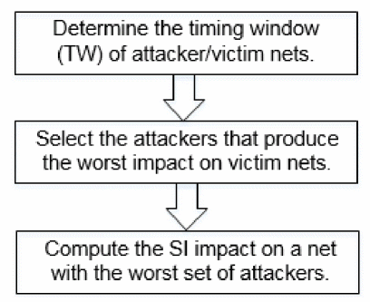
These are explained in the sections below.
Determining Timing Windows
Tempus can generate or read in the timing window information (using the read_twf command) to determine which signals can (or cannot) switch simultaneously. The slews are used to switch attacking signals. Timing windows represent the range of time during which a net can transition. They are used to decide when it is possible for multiple attackers to combine.
Attacker timing windows are exhaustively checked for the worst-case allowable combination for the final combined simulation.
- The worst case is determined by each attacker's glitch noise contribution.
- The victim's timing windows are also checked for SI delay analysis.
- The attacker slew affects the magnitude of the noise peak/incremental delay.
A more accurate slew reduces the noise peak, if the transition time is greater than the default fast slew.
Figure -13 Timing Windows (TW) Illustration
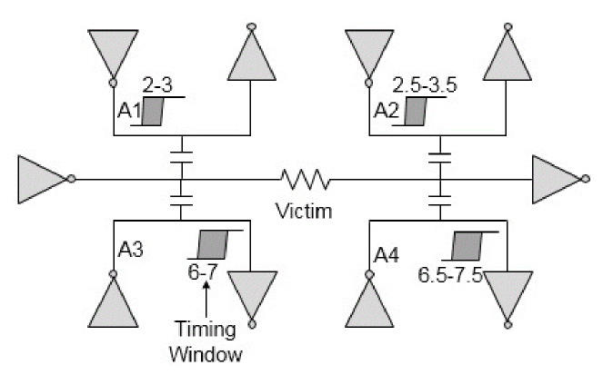
In the above figure, the ranges represent the timing windows for the respective nets. For attacker A1, TW range is 2-3, that is, the time interval in which net A1 can switch. The attackers A1 and A2 can be combined to produce a bigger SI impact since their TWs are overlapping. Similarly, attackers A3 and A4 can be combined since TWs are overlapping.
Now, depending on which one of the two combinations (A1-A2, or A3-A4) produces worst SI impact, one of the combinations will be selected by the software for SI analysis.
Timing Windows Iterations
The SI effect on delay depends on timing windows and slew, whereas the timing window and slew depends on the SI effect of delay. Therefore, the timing windows impact SI delay and SI delay impacts timing windows.
Hence, an iterative approach is required to accurately compute the timing windows affected due to SI so that Tempus can accurately calculate the SI delay and glitch.
There are two primary approaches to timing window iteration. The default approach starts with an infinite timing window and iterates while shrinking the timing window width. The second approach starts with a nominal or noiseless timing window and iterates while growing the timing window width.
The following figure shows the default approach to start with infinite timing windows and calculates the initial delta delays.
Figure -14 Timing Windows (TW) 1st Iteration
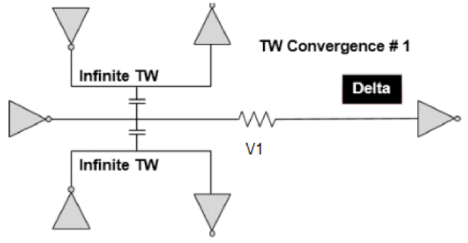
In the second iteration, as shown in figure below, the delta delays are used to calculate new arrival times, and therefore new timing windows. These new timing windows are used to calculate new delta delays. The new delta delays are smaller because the timing windows are more precise (smaller) compared to infinite timing windows.
Figure -15 Timing Windows (TW) 2nd Iteration
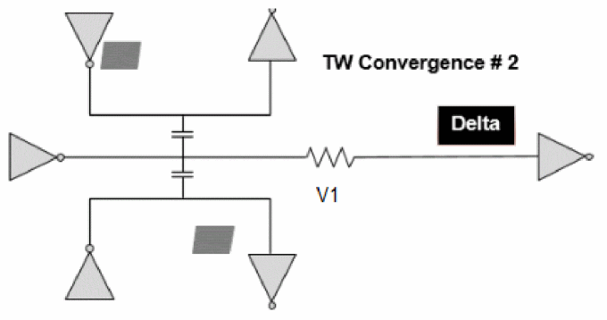
By default, Tempus performs two iterations. You can change the number of Iterations by using the following command:
set_si_mode-num_si_iterationNumber
All the nets are not reselected for analysis in each timing window iteration. Tempus supports the following methods of re-selection.
These reselection criteria can be specified by using the command:
set_si_mode -si_reselection {delta_delay | slack | xcap_ratio}(default is slack)
The default approach of starting with infinite TW will incur certain pessimism as in the initial iteration, the nets will be having much bigger computed noise as compared to the actual scenario. This pessimism will be reduced in the subsequent iterations as the nets are reselected and their timing windows are shrunk. But reselecting all the nets will have a huge run time impact. Therefore, the above mentioned criteria determines which nets are to be reselected for further iterations. Understanding the trade-off between the runtime and pessimism reduction, you can appropriately decide how the above criteria needs to be deployed in the design.
Also, it is important to understand that reselecting a particular net does not ensure that all pessimism is removed from SI analysis on that net. For instance, if the timing critical nets are being reselected, the attackers of the critical victim nets may not necessarily be critical, so the timing windows on the attackers may be pessimistic.
Timing Window CPPR
Timing windows of nets are computed irrespective of their relative positioning. There can be some pessimism in analysis when the victim/attacker share common clock path.
Attacker attacks a victim with its full strength if it switches at the same time as the victim, and the impact of the attacker on the victim declines as the distance between switching times increases. The computation of closest switching time based on these arrival times can be pessimistic if both attacker and victim share the same clock path.
Figure -16 Timing Windows on CPPR Mode
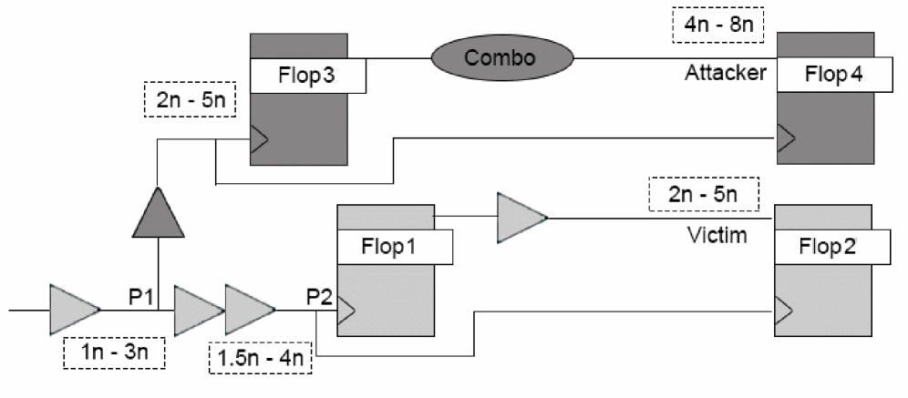
In the example above, for path from Flop1 to Flop2, Attacker’s TW (4n – 8n) is overlapping with Victim’s TW (2n – 5n). The clock arrival (at point P1), which is causing victim to reach at 5ns is 3ns. As both victim and attacker are sharing the same launch clock path till P1, they both will be launched with the same clock arrival time till the point. So corresponding to the arrival time of 3ns (at P1) the attacker can switch earliest by 6ns (and not 4ns). Therefore, the actual positioning of the attacker and victim will be, as shown in the figure below. The attacker can only attack from a shortest distance of 1ns from the victim switching time.
Figure -17 Timing window of Attacker and Victim not Overlapping
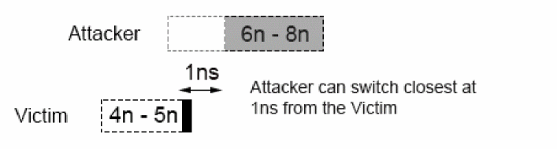
You can remove pessimism by enabling the following global variable:
set timing_enable_timing_window_pessimism_removal true
The adjustment in attacker TWs accounts for the difference in min-max delay on the top common clock path due to the following factors:
Difference in base arrival of the top clock path due to early/late derates.
Min/Max SI impact on common clock path (adjusted only during hold analysis).
Selection of Attackers
After determining the timing windows of attacker/victim nets, Tempus selects the attackers that produces the worst impact on the victim net. Tempus controls the attacker's selection based on the following factors:
- Strength of Attacker
- Attacker Selection Based on Alignment
- Attacker Selection Based on Logical Correlation
Strength of Attacker
The strength of an attacker is the amount of glitch it produces at victim’s receiver input and it depends on the coupling capacitance between attackers and victims. With new processes (smaller geometries), the ratio of Ccpl/Ctot is increasing. Some victims can have 100s or 1000s of attackers and many of these attackers can be small ones. SI analysis run time is a strong function of the number of attackers. Higher numbers of attackers can result in high analysis run time. Tempus provides a better way of handling small attackers by combining these small attackers together. Tempus models many small attackers on a victim net and replaces them with an imaginary net, called a virtual attacker.
Figure -18 Virtual Attackers Modeling
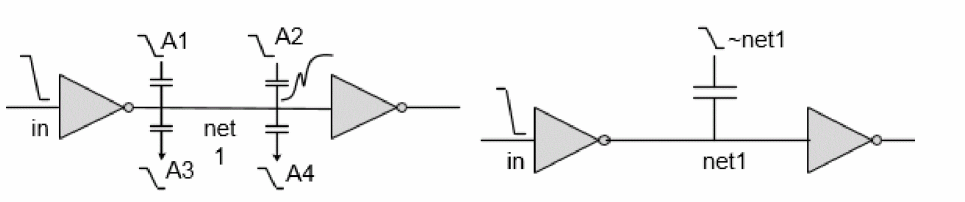
In the figure above, the small attackers, namely A1, A2, a3, and a4, are combined together to form a virtual attacker ~net1.
Tempus identifies an attacker as an individual attacker if the glitch contribution from this attacker is more than the threshold value specified with the set_si_mode -individual_attacker_threshold value command. If the peak of this glitch on the victim net exceeds the specified threshold value, then the attacker is significant and is individually reported in the constituents section of the SI report. You can use the -individual_attacker_clock_threshold parameter to vary small attacker threshold for victim nets lying on a clock path.
If the glitch contribution of an attacker is less than the threshold value defined with the -individual_attacker_threshold of the set_si_modecommand, then this attacker becomes eligible for the virtual attacker.
The two main characteristics of a virtual attacker are: coupling capacitance and the voltage source waveform used as a transition on the virtual attacker. You can use the set_si_mode –accumulated_small_attacker_mode command to create and control the characteristics of the virtual attacker. Tempus provides the following two methodologies for creating virtual attackers:
Current Matching-Based Methodology
To create virtual attackers using this methodology, you can set the following command:
set_si_mode –accumulated_small_attacker_mode current
Tempus creates virtual attackers to match both the coupling capacitance and the noise current. The PWL waveforms are generated in such a way that current induced by the transition matches the total current induced by all virtual attacker components.
This methodology differs from the coupling capacitance methodology as follows:
- Keeps several of the top virtual attacker components and calculates a PWL waveform for each analysis type using TW filtering.
- Improves on the statistical method (3-sigma method) by accounting for the probability of switching.
Coupling Capacitance Matching-Based Methodology
To create virtual attackers using this methodology, you can set the following command:
set_si_mode –accumulated_small_attacker_mode cap
Tempus creates virtual attackers that model the combined coupling capacitance effects of small attackers on a victim net. Every victim net can potentially have a virtual attacker. Tempus assigns a name to each virtual attacker based on the name of the victim net. For example, if the victim net name is ABC, then the virtual attacker net name will be ~ABC. The pessimism of using the virtual attacker can be reduced by adjusting the value of the accumulated_small_attacker_factor between 0 and 1.
set_si_modeaccumulated_small_attacker_factorvalue
To recognize those attackers that may have a significant impact on a victim net, Tempus performs a quick and conservative estimation that takes into account the resistance and capacitance (RC) characteristics of the attacker and the victim net, as well as the worst-case drive strength and the load of the victim net. If the estimated coupling capacitance effect from an attacker is greater than five percent of VDD, the attacker is explicitly reported as an attacker constituent of that particular victim net. It is typical for a victim net to have as many as three or four attackers of this type. In general, attackers are usually very small and fall under this five percent threshold.
You can change the virtual attacker glitch threshold using the set_si_mode – accumulated_small_attacker_threshold command. The default value of this parameter is 10.01 percent of VDD. For example, to disable virtual attacker you can use a threshold value greater than 1 (default), by using the following command:
set_si_mode -accumulated_small_attacker_threshold 1.01
The virtual attacker provides time and memory savings, but sacrifices some accuracy, reporting detail, and control on slew and timing window information. Because the virtual attacker is used only for small attackers, these sacrifices should have a minimal impact on results.
Attacker Selection Based on Alignment
Tempus supports the following attacker alignment modes that allow you to select attackers based on their alignment with victim nets:
The attacker alignment mode can be set by using the following command:
set_si_mode [-attacker_alignment {path | path_overlap | timing_aware_edge | input_arrival}]
The default mode is input_arrival.
Path Mode
- Tempus uses the victim’s worst arrival edge (as shown in the figure) when determining which attackers can align with it.
- SI impact is computed according to the latest/earliest arrival edge of the victim for maximum/minimum analysis.
- This mode yields a more realistic analysis.
The path-based alignment mode annotates each attacker’s impact on victim transition where attacker timing window edge aligns. The following example shows that in GBA mode Attacker 2 timing window edge is close to the delay measurement point, thus resulting in maximum impact.
Figure -19 Path Alignment Mode
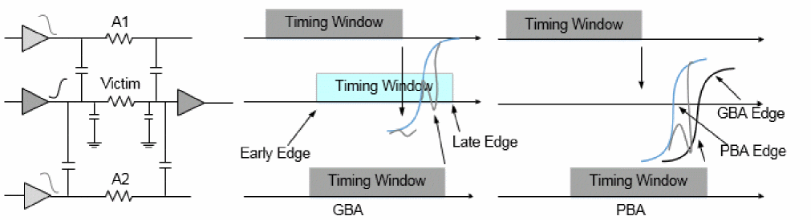
The path-based alignment is more realistic analysis and is less pessimistic than the other two modes. However, GBA is not guaranteed to bound PBA delays. In this example, the victim arrival time gets faster (move left) due to retiming of victim timing in PBA. With retimed arrival time of victim, both the attacker timing window edges now align at the delay measurement point, thus PBA sees a larger cross-talk impact than GBA.
The flow in path mode is illustrated in the figure below.
Figure -20 Attackers alignment in path mode
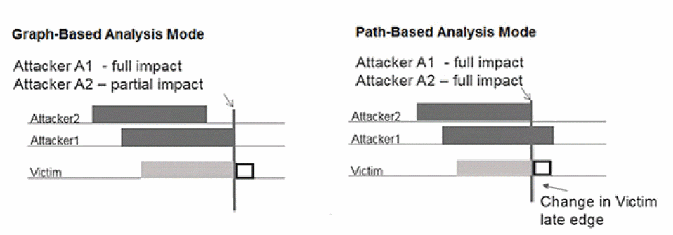
In the above figure, for paths that are based on the last arrival edge of victim net, only A1 will be selected for alignment in path mode.
Path Overlap Mode
In path overlap mode, Tempus uses the full timing window of the victim, when determining which attackers can align with it.
The SI impact is calculated according to the victim edge that is available anywhere within the timing window where the maximum impact occurs.
The path overlap mode considers all the attackers which overlap anywhere on victim transition and annotate their combined impact at delay measurement point in both GBA and PBA. Due to this methodology, the computed SI impact based on path overlap is pessimistic. However, GBA is guaranteed to bound PBA analysis.
The following example illustrates path overlap alignment mode:
Figure -21 Path Overlap Alignment Mode
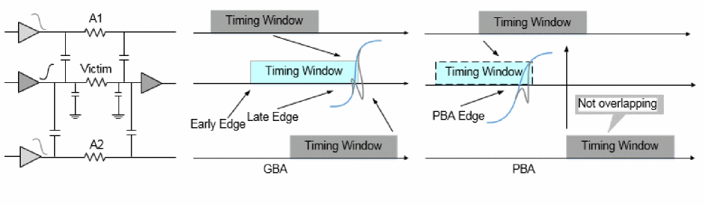
This mode is more conservative in cross-talk delay computation among the other available modes.
The PBA analysis does not change based on attacker alignment modes, that is, PBA analysis always annotates individual attacker impact on victim transition where ever attacker timing windows overlap in all the three modes.
The flow in path overlap mode is illustrated in the diagram below.
Figure -22 Attackers alignment in path overlap mode
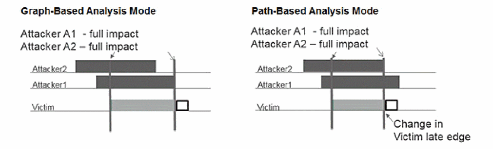
Even if victim timing window changes, the attackers' selection will remain the same. This mode ensures that GBA bounds PBA delays.
In the figure above, consider a full timing window of a victim net - both attackers A1 and A2 will be considered for alignment with victim and hence both A1 and A2 are selected in the path overlap mode. This mode is more pessimistic.
In path-based analysis (PBA) mode, Tempus uses the specific edge for the victim that occurs for a specific path when determining the alignment of the attackers to the victim. It is possible that the worst SI impact on a net occurs at a victim edge that is not the worst arrival edge for the victim, thus the PBA victim edge used inside the timing window for the victim can yield a worst-case SI result for a net. For more information, refer to section on Path-Based Analysis.
To ensure that GBA results bound PBA, you should use the path overlap alignment mode.
Timing-Aware Edge Mode
The timing-aware edge mode performs realistic analysis similar to path-based analysis. Each attacker’s impact is annotated on victim transition where attacker timing window edge aligns with the victim. However, to ensure GBA bounds PBA analysis, the timing-aware edge mode handles some nets based on their timing properties in GBA analysis.
In the following example, if the victim net is a clock, or with exceptions like false paths or MCP, the attacker timing windows are extended by width of the victim timing window.
Figure -23 Timing-Aware Edge Alignment Mode - Illustration 1
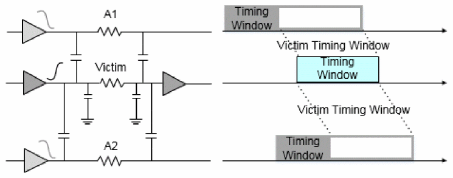
If the victim net is not a clock, and has no exceptions like false path or MCP, then all the attacker timing windows are extended by a critical region of the victim timing window, in addition to the maximum CPPR, as shown below.
Figure -24 Timing-Aware Edge Alignment Mode - Illustration 2
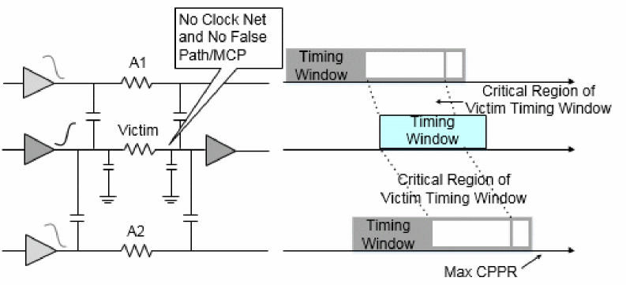
During PBA analysis, the attacker timing windows are extended by the actual CPPR of the path, and no additional padding is required.
Clock and Exception Handling Timing-Aware Edge Mode
If the victim net is a clock net, and the attacker timing windows are extended by width of the victim timing window to ensure that an attacker overlaps with the victim arrival time. Any optimism on a clock net in GBA can result in large TNS optimism (in GBA) as compared to PBA, because many paths share the same clock path. To eliminate this situation, the clock nets are handled specially in timing-aware edge mode. The exceptions in certain scenarios can cause optimism in GBA in path-based alignment mode.
Consider the following example:
set_false_path –through A1/A –through A2/A
Figure -25 Timing-Aware Edge Mode - Example 1
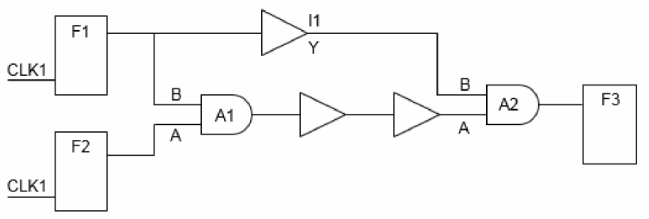
In this example, a path going through A1/B->Y in GBA analysis uses late edge, which overlaps with attacker 2 only. However in PBA mode, a path going through A1/B->Y overlaps with attackers 1 and 2 as well, this results in a larger delay than GBA. If the path ending at F3 is a critical path, then the late arrival time used in GBA analysis at A1/Y is not an optimal edge as it produces optimism in GBA. In fact, late arrival used in GBA is coming from a pin that has a false path. To overcome this caveat, timing-aware edge mode extends the attacker timing windows by width of victim timing windows, such that GBA does not report optimistic delay on critical path.
Figure -26 Timing-Aware Edge Mode
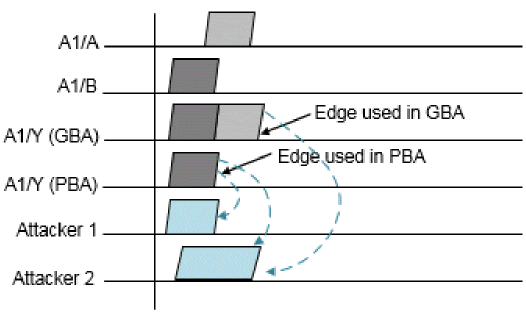
Similarly, consider the following multi-cycle path example:
Figure -27 Timing-Aware Edge Mode - Example 2
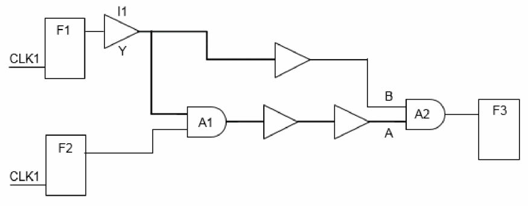
If the late arriving edge at A1/Y is based on arrival time from A1/A, then the SI delay computed based on that edge will see only one attacker, thus resulting in a smaller cross-talk delay compared to the cross-talk delay computed based on the arrival time from A1/B. If a path is reported from F2 in GBA and PBA, then PBA reports a larger delay at stage A1 due to this optimism.
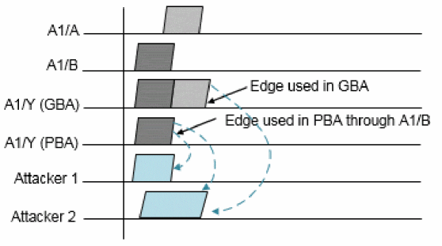
To address this optimism in GBA analysis in path-based alignment, the timing_aware_edge mode expands the attacker timing windows for stages with exceptions, such that GBA analysis will be pessimistic than PBA.
Input Arrival Mode
The input arrival attacker alignment mode can be set by using the following command:
set_si_mode -attacker_alignment input_arrival
In this mode, the attackers use timing windows formed by 2-sigma arrivals regardless of the analysis sigma multiplier.
The victim driver input arrivals will be used for SI computation, as shown below:
Figure -28 Input Arrival Alignment Mode - Illustration 1
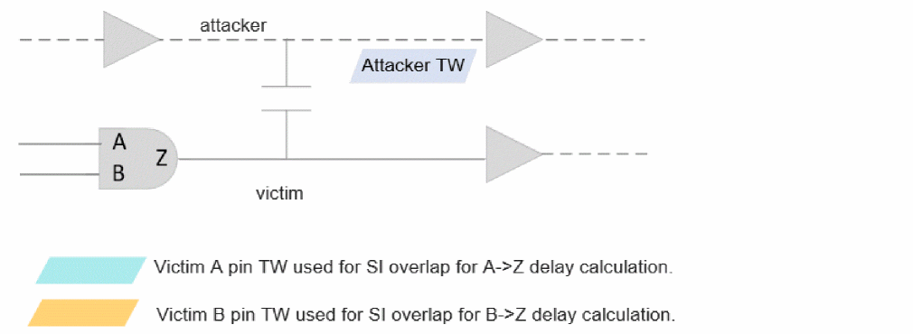
In this case, the software will internally account for victim driver cell delay while computing SI.
This behavior allows pessimism reduction in GBA SI analysis with narrower timing windows. Also, this provides a more accurate PBA SI analysis, with no dependency of driver cell GBA delays.
Victim Timing Window Handling with SOCV
The mean victim timing window and edge is used for SI computation in GBA and PBA modes, respectively. This behavior will allow GBA pessimism reduction, and a more accurate PBA analysis.
Figure -29 Input Arrival Alignment Mode - Illustration 2
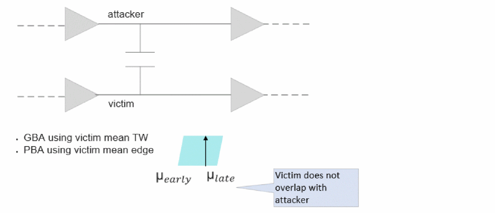
Path-Based Analysis with Signal Integrity
Path-based SI analysis reduces the pessimism introduced during graph-based SI analysis by considering path-based slews and arrival for victims. This helps in reducing design closure ECO cycles, and saves area and power of design chips.
Figure -30 Analysis performed using actual path slew and arrival times of victim
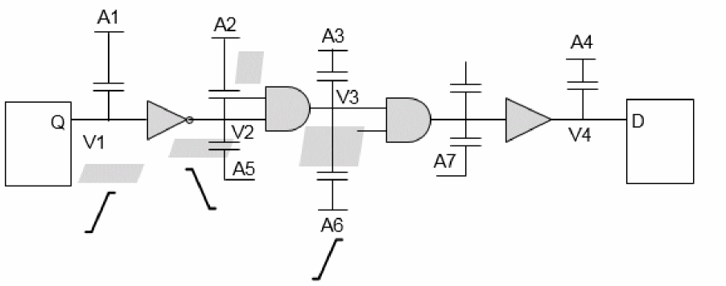
Running PBA-SI on a complete set of paths in the design is computation intensive. It is recommended to run PBA-SI on critical paths identified from GBA-SI analysis. So, while using PBA-SI based signoff ensure that GBA-SI results are always pessimistic to PBA-SI.
This can be ensured by running GBA-SI in path overlap mode, by using the following command:
set_si_mode -attacker_alignment path_overlap
The selection of attackers also depends upon the relationships between the clocks. Presence of multiple clock groups - physically exclusive, asynchronous, and synchronous - in the design will influence attacker selection behavior of Tempus differently. Tempus by default considers all the clocks as synchronous clocks if no clock group is mentioned. You can change the behavior by using below command below:
set_si_mode -clocks {asynchronous | synchronous} (default is synchronous)
Synchronous clocks have defined phase relationships amongst each other. Timing windows are considered while evaluating the attacker/victim relationship.
The default behavior can be overridden by using the following command. This provides an option to specify the timing relationship between specific clock domains.
set_clock_groups[-group <clock_list>]
[-name <name_list>]
[-logically_exclusive] | [-physically_exclusive] | [ [-asynchronous]]
The preferred order of clock relationships is physically exclusive (highest) and then asynchronous.
The table below explains the relationships and impact of different clock grouping on STA and SI analysis:
Table -1 Relationships and impact of different clock grouping
Consider a few scenarios for clock grouping, as follows:
Scenario1: In the following figure, the attacker is receiving timing window (TW) with respect to the physically exclusive clock.
Figure -31 Attackers receiving TW with respect to Physically exclusive clock
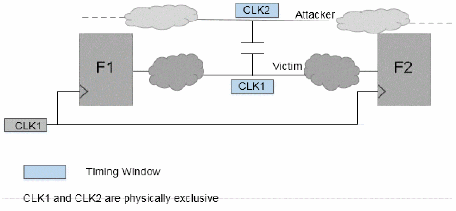
In this case, the attackers will be dropped even if the timing window overlaps with that of the victim.
No impact of attacker will be considered on the victim.
Scenario 2: In the following figure, the attacker has a timing window with respect to Synchronous as well as Physically Exclusive clocks to the victim.
Figure -32 Attackers having TW with respect to Synchronous as well as Physically Exclusive clock
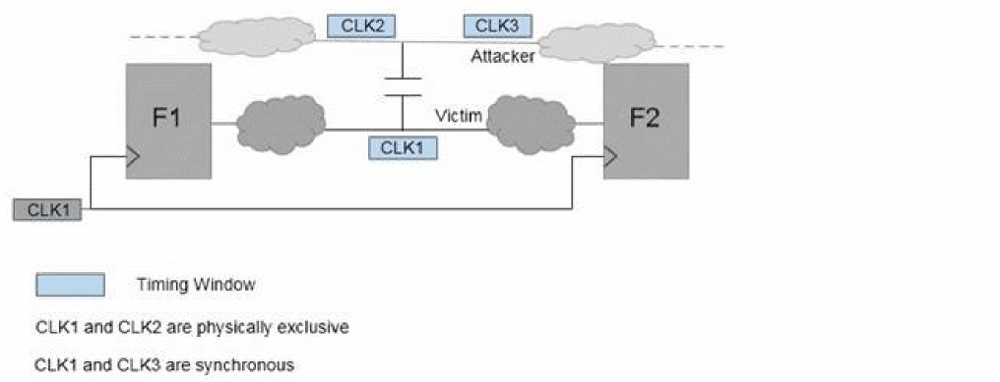
- Timing windows with respect to physically exclusive clocks to victim will be dropped (CLK2) and victim-attacker relationship is determined using the attacker timing window with respect to only synchronous clock (CLK3).
- Victim timing window (with respect to CLK1) overlapping is checked with attacker timing window (with respect to CLK3). As they do not overlap, attacker will not impact the victim.
Attacker Selection Based on Logical Correlation
During SI analysis Tempus introduces some pessimism when attackers that cannot logically attack together are allowed to attack. Tempus by default assumes that all attackers can switch together in a direction to cause a worst case delay (causing a slowdown) or speed up of transition on the victim. But in some cases, there could be logical relationship between the signals, that is, attackers might not actually switch together in the same direction.
Tempus performs logical correlation for inverters and buffers, except complex gates that are not included in logical correlation.
You can use the following command to enable logical correlation:
set_si_mode -enable_logical_correlation true (Default: false)
The following examples show some of the scenarios that logical correlation can handle.
Scenario 1 : Relationship between Attackers
Exclusive sets are subsets of attackers that can switch simultaneously.
Exclusive sets can be {A1, A3} and {A2, A4}. Here, attackers A1 and A3 will be switching in one direction, whereas A2 and A4 will switch in the opposite direction, as shown in the figure below.
Figure -33 Logical Relationship Between Attackers
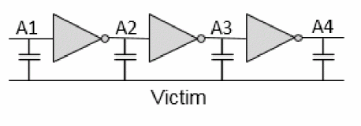
Scenario 2: Relationship between Victim and Attackers
In max analysis mode, attackers A1 and A4 can be excluded. Because, these nets cannot switch in the opposite direction to the victim to increase the delay.
In min analysis mode, attackers A2 and A3 can be excluded. Because, these nets cannot switch in the same direction as the victim to decrease the delay.
Figure -34 Logical Relationship Between Victim And Attackers
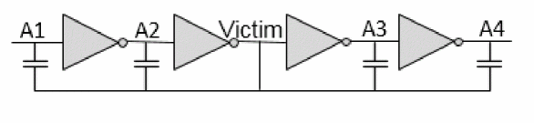
If the number of inverters on each branch does not differ by a multiple of 2, then either A1 or A2 will be used as an attacker, as shown in the figure below.
Figure -35 Logical Relationship Between Remote Attackers
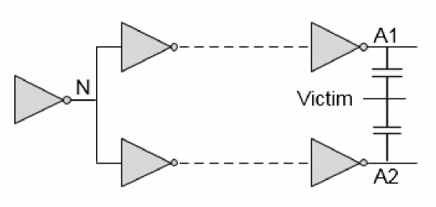
Waveform Computation
SI impact on delay (or glitch for glitch analysis) depends primarily on the following factors:
- Victim Slew
- Attackers’ Slew
- Victim coupling cap to ground cap ratio
- Relative switching direction for victim/attacker
- Arrival windows of attackers/victim nets
SI impact on delay is performed in four steps. The first three steps will be applicable for SI Glitch analysis as well.
- Determine the slew of possible attackers and victim nets in their respective directions.
- Determine the alignments of overlapping attackers to compute the worst impact.
- Align all attackers at their respective positions.
- Compute the stage delay.
Step 1: Determine Slew of possible Attackers and Victim Nets in respective directions.
Tempus implicitly considers attacker slew degradation by including the attacker's distributed parasitic network in the simulation.
Tempus determines the fastest and slowest slew possible in each direction (rise/fall) at every node in the design. For max delay analysis, the slowest slew for victim and the fastest slew (in opposite direction of victim slew) for attackers will be used, as shown in the figure below.
Figure -36 Determine slew for max delay and min delay
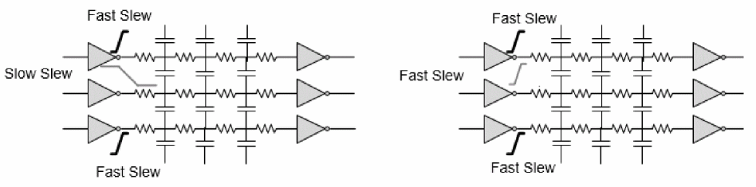
For min delay analysis, the fastest slew for victim and the fastest slew (in the same direction of victim slew) for attackers will be used, as shown in the figure above.
Step 2: Determine the alignments of overlapping attackers to compute the worst impact
Tempus aligns fully overlapping attacker’s switching time in a way that creates worst impact of each attacker on the victim receiver at the same time. Tempus computes the time of flight for each attacker by individually switching each of them. The time of flight is the time between the attacker switching time at the driver output and the corresponding glitch peak time at the victim receiver input.
Tempus computes the delay from each attacker to the victim for peak alignment, as illustrated in the figure below.
Figure -37 Compute Attacker A1 To Victim Delay (tvA1 – tA1)
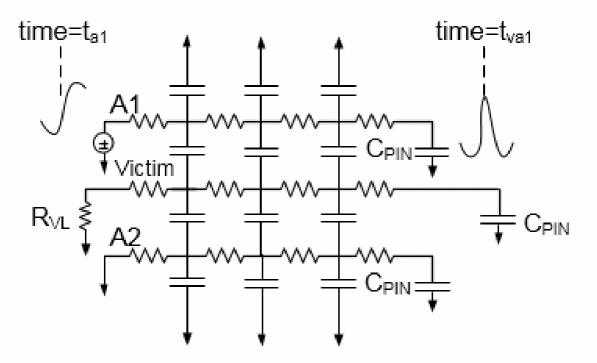
To compute time of flight for attacker A1, a voltage source with a slew rate, that is either calculated internally or annotated from static timing analysis, is applied at attacker A1 driver output while keeping all other attackers and victims silent.
Tempus calculates the delay from the 50 percent point of the switching attacker A1 at the driving pin (ta1), to the time the glitch effect on the victim receiver is maximum (tva1). For attacker A1, the delay is tva1-ta1.
Figure -38 Compute Attacker A2 To Victim Delay (tvA2 – tA2)
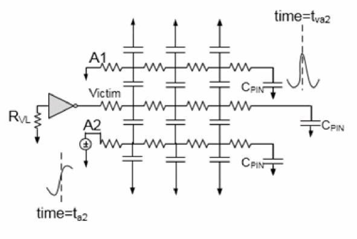
Similarly, Tempus calculates the delay from the 50% point of the switching attacker A2 at the driving pin (ta2), to the time the glitch effect on the victim is maximum (tva2). For this case, attacker A1 will be grounded. So, for attacker A2 the delay is tva2-ta2. These two delays can be different if one attacker is closely coupled to the near end of the victim wire, and the other attacker is closely coupled to the far end of the victim wire, and the victim wire is long.
Step 3: Aligning all attackers at their respective position
Tempus aligns the relative switch times of the fully overlapping attackers according to their time of flights, such that their individual peak at victim receiver input occurs at the same time.
The attacker relative alignment will be (tva2-ta2) - (tva1-ta1) such that the peak due to attackers A1 and A2 at the victim receiver input occurs at the same time, as shown in the figure below.
Figure -39 Aligning Attackers to Have Worst Impact at Victim at Same Time
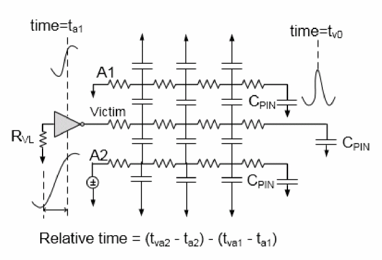
Step 4: Compute the stage delay
As a final step to compute the stage delay with SI, a transition is applied at the victim receiver, and the attacker’s impact is evaluated across the victim slew to compute the worst-case stage delay.
In the figure below, the delay at the victim’s receiver output is measured by considering the attackers across the victim slew. This will result in a change in the delay at the victim receiver’s input. Tempus computes different delays as tv2a’, tv2b’, tvc2’, and so on for different victim alignment, with respect to attackers. The one resulting in the worst delay will be considered for the worst-case stage delay computation as tv2’. Assuming that tv2 is the base delay for this stage, that is when all the overlapping attackers of this victim are silent. The delta delay will be (tv2’ - tv2). This difference becomes the SI effect on the delay results (either slow down or speed up).
Figure -40 Compute stage delay with SI (tv2’ -tv1)
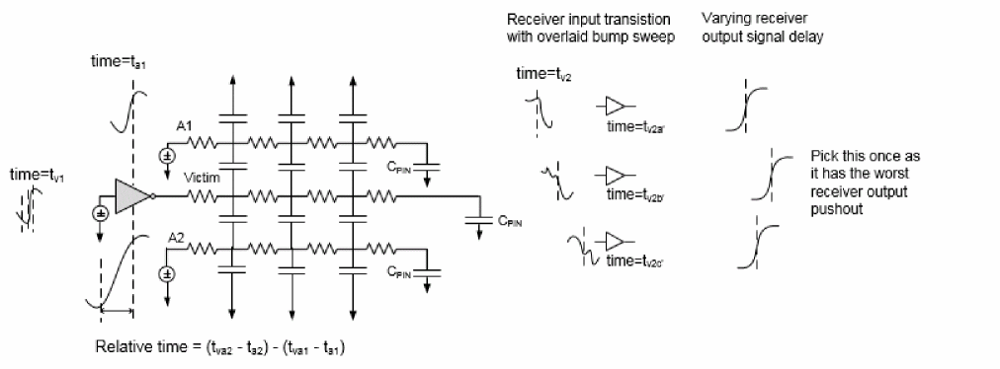
The SI impact on delay depends on the following factors:
Handling of Unconstrained Nets
If an attacker net is unconstrained, then Tempus does not consider timing windows of such nets for attacker selection. That means an unconstrained attacker is always selected in SI analysis, that is, timing window is infinite for these unconstrained nets. This makes SI analysis more pessimistic, but bounding.
To turn this off and use a constrained timing window, you can set set_si_mode -unconstrained_net_use_inf_tw to false. The default is true.
Constraining SI Analysis
SI analysis adheres to SDC constraints. However, you can additionally specify constraints on SI analysis to control whether a net can be an attacker or not. To do this, you can use the set_quiet_attacker command. For example,
set_quiet_attacker -victim vic -attacker {att1 att2} -transition rise
This software ignores an attacker for certain edges when in reference to the victim.
Computing Timing Arc-Aware SI
The SI impact on delay is computed based on the timing arc through which the path is traversing.
Figure -41 SI Impact on Delay Computed on Timing Arc
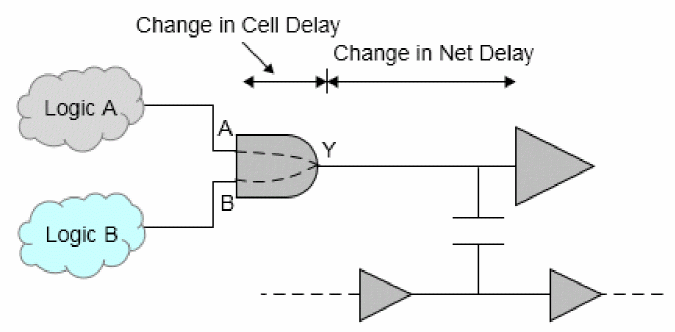
By default, Tempus calculates the delay and SI for each arc. If you choose to view the SI delay separately, it will show annotated to each arc. This helps in reducing pessimism on paths that do not come through the worst arc.
This can be controlled by using the following command:
set_si_mode -delta_delay_annotation_mode {lumpedOnNet | arc} (Default: arc)
In lumped-on-net mode, Tempus annotates the worst arc delay on the net delay.
Return to top